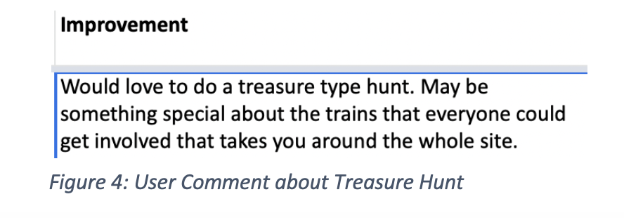
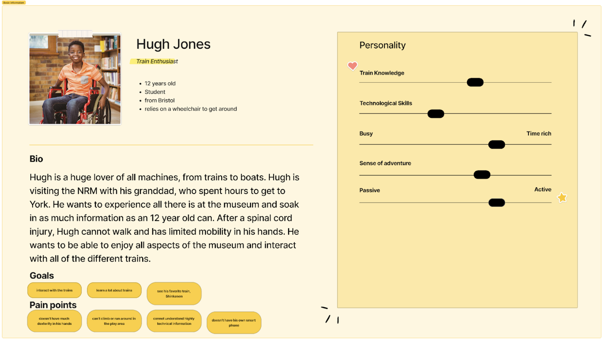
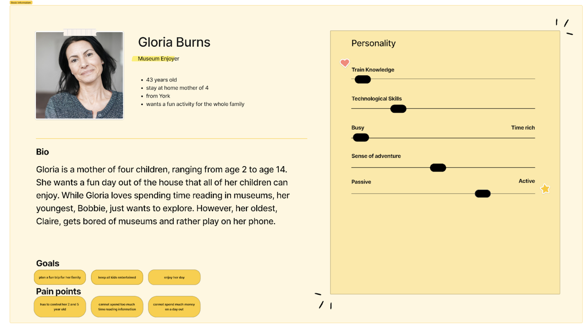
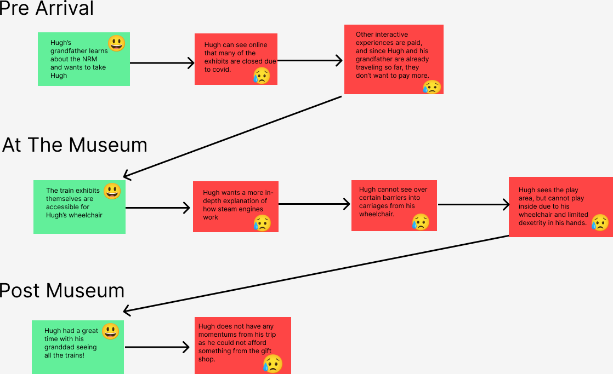

InterTracktion Project
Problem
After visiting the National Railway Museum in York, I was tasked with making the museum more interactive. The museum features incredible trains, but there is little movement or information on the trains.
Research
The National Railway Museum provided us access to their data from their survey. While reviewing this data, there were a few common trends I noticed.
As seen above, this user requests a treasure hunt along with other vistors who requested a more interactive experience for all ages. During my visit, I started playing Pokemon Go, which inspired me to create an Augmented Reality based mobile application that acts like a treasure-hunt through all the trains.
User Journey
Based on the National Railway Museum's data and their focus on accessibility and inclusion, I created two personas.
 My primary persona is Hugh, who is a train lover! He cannot climb into old trains due to his wheelchair but craves a way to interact with the trains.
